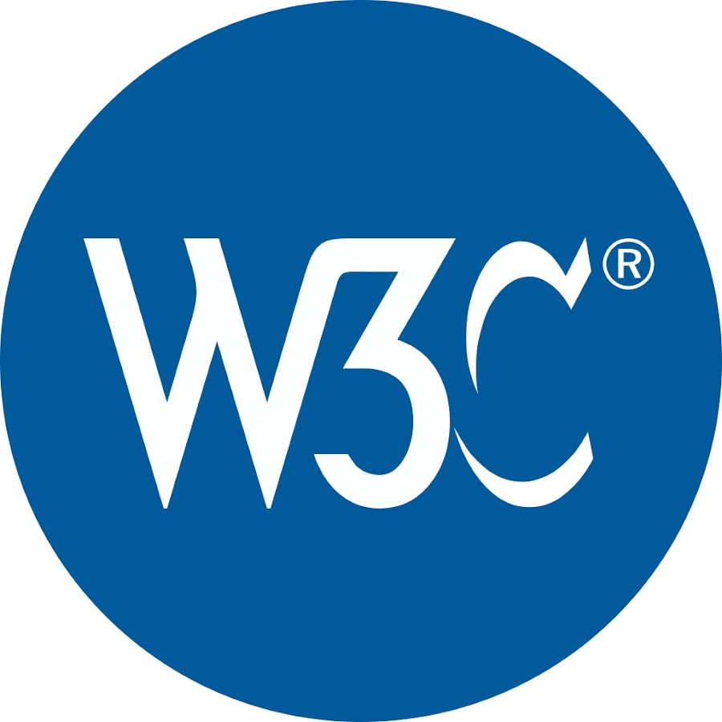

El Consorcio World Wide Web (W3C) es una organización internacional que se dedica al desarrollo de
estándares abiertos para la World Wide Web. Fue fundado en 1994 por Tim Berners-Lee, el inventor de la web,
con el objetivo de garantizar el crecimiento saludable y la interoperabilidad de la web.
El W3C trabaja en colaboración con una amplia comunidad de miembros, que incluyen empresas, organizaciones
académicas y gubernamentales, para desarrollar y mantener estándares web ampliamente aceptados y utilizados
en todo el mundo. Estos estándares abarcan una variedad de áreas, como lenguajes de marcado (HTML, XML),
hojas de estilo (CSS), accesibilidad web, protocolos de comunicación (HTTP), seguridad web, entre otros.
